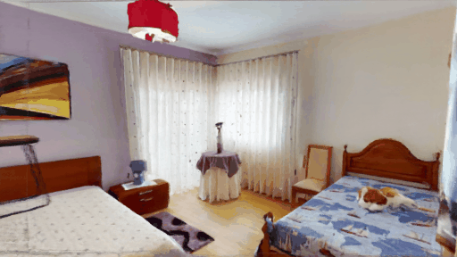

We present a portable multiscopic camera system with a dedicated model for novel view and time synthesis in dynamic scenes. Our goal is to render high-quality images for a dynamic scene from any viewpoint at any time using our portable multiscopic camera. To achieve such novel view and time synthesis, we develop a physical multiscopic camera equipped with five cameras to train a neural radiance field (NeRF) in both time and spatial domains for dynamic scenes. Our model maps a 6D coordinate (3D spatial position, 1D temporal coordinate, and 2D viewing direction) to view-dependent and time-varying emitted radiance and volume density. Volume rendering is applied to render a photo-realistic image at a specified camera pose and time. To improve the robustness of our physical camera, we propose a camera parameter optimization module and a temporal frame interpolation module to promote information propagation across time. We conduct experiments on both real-world and synthetic datasets to evaluate our system, and the results show that our approach outperforms alternative solutions qualitatively and quantitatively.
From several multiscopic input videos or images, we learn a time-varying scene representation to model the geometry and appearance of the scene. From such representation, we can generate novel images (red line) at any pose (a) and time (b).
Our objective is to render a target image It with the specified target pose P at time t. To address the problem, we formulate the neural radiance field as a function of a 4D space-time coordinate (x, y, z, t) and a 2D viewing direction d. The output consists of time-dependent radiance ct and volume density σt. To exploit and integrate the visual consistency information across time, we apply the frame interpolation method to generate intermediate frames, which serve as extra ground-truth to supervise the training process. If the camera parameters are unknown, we simultaneously optimize the intrinsic parameter in normal space and the extrinsic parameters in SE(3) space.


You can render novel view across time in indoor area
You can render novel view across time in outdoor area